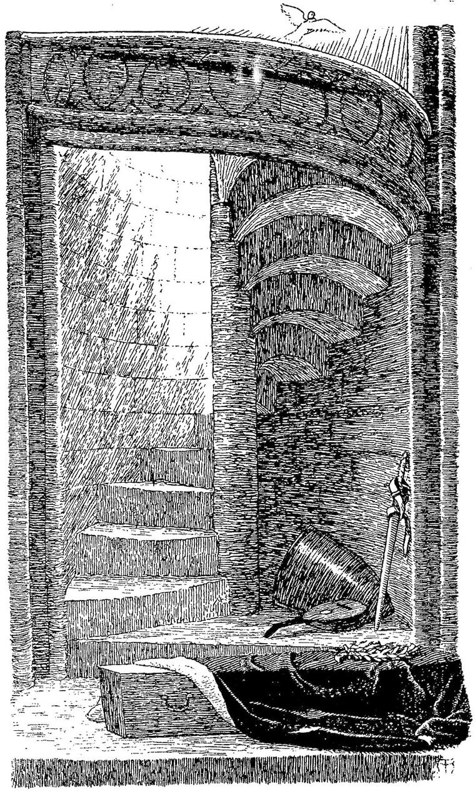

DECKAR.
We call our Dwelling-Place:
We call one Step a Race:
But angels in their full enlightened state,
Angels, who Live, and know what ’tis to Be,
Who all the nonsense of our language see,
Who speak things, and our words, their ill-drawn pictures, scorn,
When we, by a foolish figure, say,
Behold an old man dead! then they
Speak properly, and cry, Behold a man-child born!”
COWLEY.
I was dead, and right content. I lay in my coffin, with my hands folded in peace. The knight, and the lady I loved, wept over me.

Her tears fell on my face.
“Ah!” said the knight, “I rushed amongst them like a madman. I hewed them down like brushwood. Their swords battered on me like hail, but hurt me not. I cut a lane through to my friend. He was dead. But he had throttled the monster, and I had to cut the handful out of its throat, before I could disengage and carry off his body. They dared not molest me as I brought him back.”
“He has died well,” said the lady.
My spirit rejoiced. They left me to my repose. I felt as if a cool hand had been laid upon my heart, and had stilled it. My soul was like a summer evening, after a heavy fall of rain, when the drops are yet glistening on the trees in the last rays of the down-going sun, and the wind of the twilight has begun to blow. The hot fever of life had gone by, and I breathed the clear mountain-air of the land of Death. I had never dreamed of such blessedness. It was not that I had in any way ceased to be what I had been. The very fact that anything can die, implies the existence of something that cannot die; which must either take to itself another form, as when the seed that is sown dies, and arises again; or, in conscious existence, may, perhaps, continue to lead a purely spiritual life. If my passions were dead, the souls of the passions, those essential mysteries of the spirit which had imbodied themselves in the passions, and had given to them all their glory and wonderment, yet lived, yet glowed, with a pure, undying fire. They rose above their vanishing earthly garments, and disclosed themselves angels of light. But oh, how beautiful beyond the old form! I lay thus for a time, and lived as it were an unradiating existence; my soul a motionless lake, that received all things and gave nothing back; satisfied in still contemplation, and spiritual consciousness.
Ere long, they bore me to my grave. Never tired child lay down in his white bed, and heard the sound of his playthings being laid aside for the night, with a more luxurious satisfaction of repose than I knew, when I felt the coffin settle on the firm earth, and heard the sound of the falling mould upon its lid. It has not the same hollow rattle within the coffin, that it sends up to the edge of the grave. They buried me in no graveyard. They loved me too much for that, I thank them; but they laid me in the grounds of their own castle, amid many trees; where, as it was spring-time, were growing primroses, and blue-bells, and all the families of the woods
Now that I lay in her bosom, the whole earth, and each of her many births, was as a body to me, at my will. I seemed to feel the great heart of the mother beating into mine, and feeding me with her own life, her own essential being and nature. I heard the footsteps of my friends above, and they sent a thrill through my heart. I knew that the helpers had gone, and that the knight and the lady remained, and spoke low, gentle, tearful words of him who lay beneath the yet wounded sod. I rose into a single large primrose that grew by the edge of the grave, and from the window of its humble, trusting face, looked full in the countenance of the lady. I felt that I could manifest myself in the primrose; that it said a part of what I wanted to say; just as in the old time, I had used to betake myself to a song for the same end. The flower caught her eye. She stooped and plucked it, saying, “Oh, you beautiful creature!” and, lightly kissing it, put it in her bosom. It was the first kiss she had ever given me. But the flower soon began to wither, and I forsook it.
It was evening. The sun was below the horizon; but his rosy beams yet illuminated a feathery cloud, that floated high above the world. I arose, I reached the cloud; and, throwing myself upon it, floated with it in sight of the sinking sun. He sank, and the cloud grew gray; but the grayness touched not my heart. It carried its rose-hue within; for now I could love without needing to be loved again. The moon came gliding up with all the past in her wan face. She changed my couch into a ghostly pallor, and threw all the earth below as to the bottom of a pale sea of dreams. But she could not make me sad. I knew now, that it is by loving, and not by being loved, that one can come nearest the soul of another; yea, that, where two love, it is the loving of each other, and not the being loved by each other, that originates and perfects and assures their blessedness. I knew that love gives to him that loveth, power over any soul beloved, even if that soul know him not, bringing him inwardly close to that spirit; a power that cannot be but for good; for in proportion as selfishness intrudes, the love ceases, and the power which springs therefrom dies. Yet all love will, one day, meet with its return. All true love will, one day, behold its own image in the eyes of the beloved, and be humbly glad. This is possible in the realms of lofty Death. “Ah! my friends,” thought I, “how I will tend you, and wait upon you, and haunt you with my love.”
My floating chariot bore me over a great city. Its faint dull sound steamed up into the air—a sound—how composed? “How many hopeless cries,” thought I, “and how many mad shouts go to make up the tumult, here so faint where I float in eternal peace, knowing that they will one day be stilled in the surrounding calm, and that despair dies into infinite hope, and the seeming impossible there, is the law here!
“But, O pale-faced women, and gloomy-browed men, and forgotten children, how I will wait on you, and minister to you, and, putting my arms about you in the dark, think hope into your hearts, when you fancy no one is near! Soon as my senses have all come back, and have grown accustomed to this new blessed life, I will be among you with the love that healeth.”
With this, a pang and a terrible shudder went through me; a writhing as of death convulsed me; and I became once again conscious of a more limited, even a bodily and earthly life.